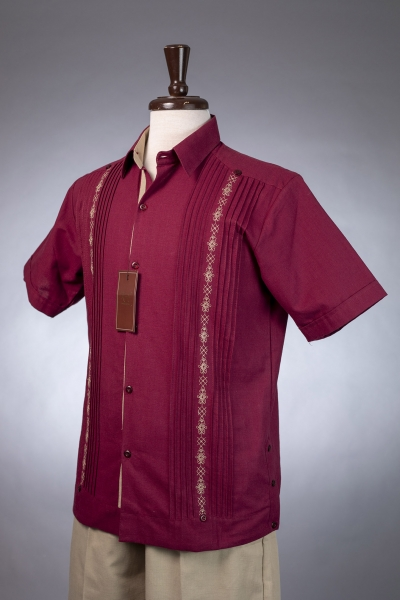

Ropa Para Caballero
Más Información
Las Guayaberas Son Muy Atractivos Por Sus Bordados Y Diseños Y Esto Es Lo Que A Las Personas Les Gusta. Las Artesanías Son Un Trabajo De Mucha Paciencia Y Que Debe Recibir Una Atención Especial. Para Llevar A Cabo Este Trabajo Los Artesanos Ponen Práctica Diversas Técnicas Manuales, Las Guayaberas Para Caballero Estan Hechas Con Gran Dedicación Y Empeño Ya Que Estos Mayormente Se Compran Para Eventos Importantes. Aqui Podrás Encontrar Tipos De Diseños De Ropa Artesanal Para Caballeros.